El comienzo de la historia de Jesús se remonta a los días que dieron origen a Santa Claus, el Grinch y a Jesús como lo narran las crónicas de los profetas ,
Y fué entonces cuando papá Jehová, cansado de un Antiguo Testamento que no lo dejaba bien parado, decidió hacer uno Nuevo, con menos venganzas.

Los primeros días de Jesús fueron algo controvertidos, especialmente en la escuela.

He aquí el boletín de calificaciones del joven Jesús:
- Religión: 6
-
Comentario del maestro: A la pregunta “¿Quién hizo el mundo?”, persiste en decir “Mi papá”. Dice que la Biblia viene de la misma fuente.
- Idioma: 6,5
-
Comentario del maestro: Tiende a hablar y escribir en formas arcaicas y utiliza figuras retóricas fuera de tiempo.
- Historia: 10
-
Comentario del maestro: Excelente alumno en Historia de la Religión y en Civilizaciones Antiguas.
- Geografía: 4
-
Comentario del maestro: Su preparación en “Zonas cálidas y secas” es excelente, pero muestra poco interés en el resto. Afirma que desde un monte muy alto se puede ver todo el mundo.
- Estudios Sociales: 9
-
Comentario del maestro: Muestra gran interés en materias sociales.
- Matemáticas: 4
-
Comentario del maestro: Faltas básicas. Persiste en decir cosas como “Tres son uno” y “Yo y mi padre sumamos uno”.
- Ciencias: 4
-
Comentario del maestro: Falta de disciplina. Ejemplo: Cuando le pregunté que repita el experimento que yo mostré acerca de como hacer hidrógeno, contestó diciendo que “Hay mejores formas”.
- Dibujo: 6
-
Comentario del maestro: Prefiere dibujar con un palo en la arena a usar papel y lápiz.
- Educación y Consumo: 7,5
-
Comentario del maestro: Muestra ideas interesantes acerca de una vida alternativa. Algo acerca de vivir como pájaros en las llanuras. Demasiado utópico.
- Arte: 8
-
Comentario del maestro: Tiene gran imaginación y creatividad. Le gusta hacer cosas con el polvo y el agua.
- Manualidades: 10
-
Comentario del maestro: Excelente en carpintería. Obviamente recibe ayuda y estimulación en la casa.
- Música/Actuación: 9.5
-
Comentario del maestro: Un gran miembro del coro escolar. En ocasiones puede llegar a ser tremendamente dramático.
- Cívica: 10
-
Comentario del maestro: Muy interesado en todo lo que respecta a la comunidad.
- Educación Física: 5
-
Comentario del maestro: Problemático. Ejemplo: Durante una clase de natación insistía en cruzar la piscina caminando sobre el agua.
- Educación para la salud: 10
-
Comentario del maestro: Muestra una remarcable aptitud para primeros auxilios y tiene conocimientos del cuerpo humano.
Comentario para los padres:
Este chico tiene una poco recomendable tendencia a formar pandillas. Ha organizado a doce de sus amigos y formaron una, la cual puede ser vista constantemente con hijos de pecadores. Debería ser más selectivo al elegir a sus amigos. Además, debería aprender a tener el pelo mas cuidado o más corto, y no debería combinar sandalias con el uniforme escolar. En general progresa adecuadamente.
Ya Jesús después de su bautismo inició su ministerio y empezó a buscar adeptos…

Y bajando a Caná en Galilea, Jesús hizo su primer milagro…
 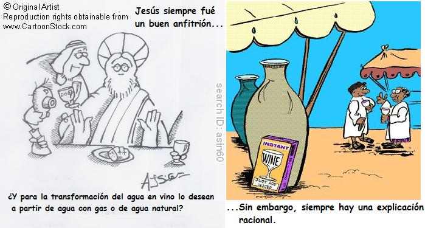
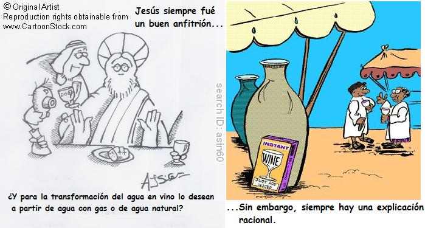

Y todo esto ocurrió para que supieran que Jesús era el mesías. Pero luego vendrían más milagros…

Pero no todo eran milagros, Jesús tenía que predicar, y una de las cosas que enseñó fue sobre el perdón.
Cuando los judíos iban a proceder a la lapidación de la mujer adúltera, aparece Jesús y dice a todos:
— ¡Alto! Quien esté libre de pecado, que tire la primera piedra.
De repente sale una mujer del público, y… ¡ZAS!, le pega pedrada en toda la cara de la pobre adúltera, y Jesús dice:
—¡Mierda!, Mamá, siempre jodiéndome los sermones.
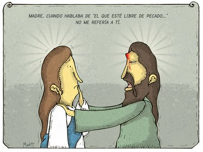En otra ocasión, una señora va a a un sermón de Jesús a la montaña, durante el sermón Jesús pregunta: “¿Cuántos quieren ir al cielo?”
Todos responden: “¡Yo!”, y la señora se queda callada.
Jesús pregunta de nuevo: ¿Cuántos quieren ir al cielo?
De nuevo todos dicen: “¡Yo!”, y la señora callada.
Jesús pregunta: “Señora, ¿usted no quiere ir al cielo?”
La señora responde: “Yo sí quiero, pero me voy en otro viaje porque este está muy lleno”.
Y después de estas cosas Jesús se fue a Cafarnaún solo con sus discipulos cansado que la gente al verlo le dijera: “Ey, Jesús te tenemos unas garrafas con agua para que nos hagas un numerito”.
Ya en Cafarnaún, Jesús les dice a sus discípulos: “Miremos a ver que han aprendido. Les voy a hacer un examen de religión”.
Entonces Pedro y Santiago hablan antes de entrar al examen con el maestro
—Pedro: Mira, Santiago, la palabra clave para aprobar es PUNTUALICEMOS.
Una vez en clase pregunta Jesús a Pedro:
—Jesús: Pedro, háblame de la Biblia.
—Pedro: PUNTUALICEMOS, ¿del nuevo o del antiguo testamento?
—Jesús: Muy bien, Pedro, del antiguo testamento.
—Pedro: PUNTUALICEMOS, ¿del Éxodo, Deuteronomio…?
—Jesús: Muy bien, Pepito, háblame del Éxodo. -
—Pedro: PUNTUALICEMOS, ¿del principio, del medio o del final?
—Jesús: muy bien Pedro, siéntate, se ve que sabes.
—Jesús: Santiago… háblame del padre nuestro.
—Santiago: PUNTUALICEMOS, ¿del mío o del suyo?
Luego Jesús volvió a Nazareth con sus discípulos donde se encontro de nuevo con su padre, ya muy viejo…

Estaba Jesús montado en una mula camino a Jerusalén cuando de repente la mula sale corriendo y Jesús perdiendo el equilibrio cae. Ahi medio moribundo al lado del camino, cuando lo ve Pedro y le dice:
—Pedro: Maestro, maestro, ¿Está herido?
—Jesús: Si… hijo mío, No creo que salga vivo de ésta.
—Pedro: No, no diga eso Señor, mire enseguida llamo a la Cruz Ro…
Jesús se levanta de golpe y dice:
—Jesús: No, no, no, no. Aqui no pasó nada.
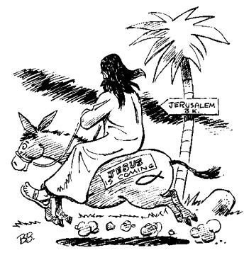
Y luego en Jerusalem Jesús predicó las buenas nuevas…
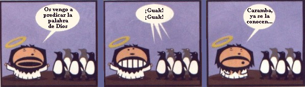Estando Jesucristo con los apóstoles, dijo:
-En verdad os digo que: “y = x².”
Los apóstoles preguntaron:
—¿Que significa, maestro? No lo entendemos.
Y Jesucristo contestó:
—Es una parábola.
Sin embargo, no todas sus ideas gozaron de una amplia popularidad.
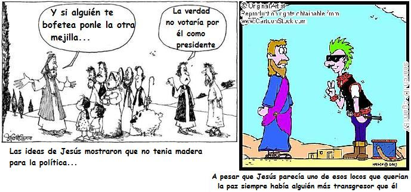En el Templo de Jerusalen Jesús estaba predicando a las multitudes cuando de repente ve a un hombre anciano que se le hace familiar.
-¿Cómo te llamas?
El viejito se queda pensando y dice:
-A mi edad mi memoria falla tanto como mi vejiga.
Jesús le dice entonces:
-Dime algo que recuerdes de tu familia.
El viejito le dice:
-Yo solo me acuerdo de que era carpintero y mi hijo es muy famoso.
Jesús se emociona y le da un fuerte abrazo exclamando:
-¡Padre!
El viejito se emociona también y le dice:
-¡Pinocho!
Después de esto Jesús salió al mar de Galilea con sus discipulos para que acrecentarán su fe después de lo del encuentro con Guepeto
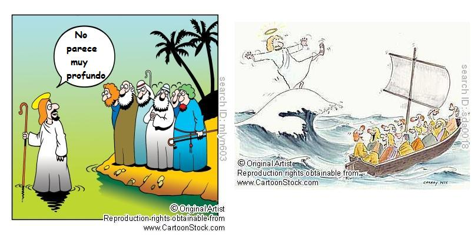

Entre tanto Jesús le daba enseñanzas a los apóstoles sobre la fe cuando le dijo a Pedro que caminase sobre las aguas. Pedro salta al agua pero inmediatamente empieza a sumergirse.
Y el Señor hizo todos estos milagros para que creyeran en él, pero muchos dudaban. Sin embargo, a pesar de toda su fe Jesús habían cosas que lo mantenian apesedumbrado.

Y sucedió que mientras Jesús estaba orando a solas, se hallaban con él los discípulos y él les preguntó: ¿De dónde dice la gente que soy yo?. Ellos respondieron: Unos dicen que de Nazareth, otros que de Belén y otros de Hippilandia.
Jesús les dijo: Y vosotros, ¿de dónde creéis que soy yo?
Tomás, el discípulo incrédulo, respondió:
—Yo he hecho una encuesta y estos son los datos que he encontrado:
- “Existen tres razones de que Jesús haya sido judio:
Siguió el mismo oficio de su padre.
Vivió en casa de sus padres hasta la edad de 33 años.
Su madre fue una Virgen y su padre fue Dios.
- “Existen tres razones de que Jesús haya sido irlandés:
Nunca se casó.
Nunca mantuvo un trabajo estable.
Su último pedido fue algo de tomar.
- “Existen tres razones de que Jesús haya sido latino:
Se llamó Jesús.
Siempre tuvo problemas con la ley.
Su madre nunca supo quien fue su padre.
- “Existen tres razones de que Jesús haya sido italiano:
Hablaba y gesticulaba mucho con las manos al hablar.
Tomaba vino con todas sus comidas.
Trabajaba en la construcción.
- “Existen tres razones de que Jesús haya sido negro:
Llamaba a todos “hermanos”.
Nunca tuvo una dirección postal permanente.
Nadie quería darle trabajo.
- “Existen tres razones de que Jesús haya sido californiano:
Nunca se cortó el pelo.
Siempre anduvo descalzo.
Inventó una nueva religión.
- “Pero existen veinte razones de que Jesús haya sido colombiano:
Siempre quiso la paz.
Le gustaban las galladas, siempre andaba con doce.
No llegaba a casa.
¡Estaba rodeado de pobres y cada día eran más!
Hizo aparecer más trago en una reunión donde sólo había agua.
Era bueno con las prostitutas.
El diablo intentó tentarlo.
No pagaba impuestos.
Nunca tenía un peso en el bolsillo.
Estuvo en una pesca milagrosa.
En la última cena con sus amigos no pagó la cuenta.
Siempre tenía una explicación para todo.
Se las ingenió para alimentar a una gran multitud con poco presupuesto.
Fue secuestrado.
El ejército pagó recompensa por su captura y fue vendido por uno de sus amigos.
Fue condenado mientras que el verdadero ladrón fue perdonado.
Se daba sus voladitas de casa desde los doce años.
Se sintió abandonado por Dios.
Cuando lo encontraron muerto estaba en calzoncillos.
Sus familiares fueron a visitar su tumba y ya no estaba.”
Se encontraba María Magdalena y le dice a Martha, la hermana de Lazaro: Marta, ¿Conoces los versículos bíblicos de las solteras? Marta dice: No señora. a lo que María responde: Ponedme atención:
-Cuando tienen de 15 a 20 años dicen: “Muchos son los llamados y pocos los escogidos”
-Cuando pasan los 20 años dicen: “Examinadlo todo y retened lo bueno”
-Cuando tienen 30 y siguen solteras dicen: “Venid a mi todos los que estáis trabajados y cansados…”
-Cuando cumplen 40 dicen: “El que vienen a mi yo no le hecho fuera”
-Y si pasan de los 50 dicen: “Juntamente con él estoy crucificado”

 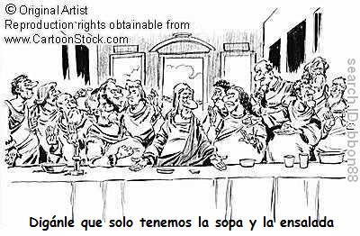
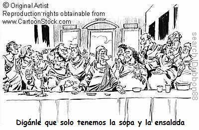Jesús, muy preocupado, llama a sus apóstoles a una junta de emergencia por el alto consumo de drogas en la Tierra después de mucho pensar llegan a la conclusión de que lo mejor para poder enfrentar el problema es probar la droga ellos mismos despues tomar las medidas pertinentes. Se decide que una comisión de apóstoles vaya por el mundo y consigan diferentes drogas para empezar a reconocerlas. Efectuada la operación con el máximo secreto a los pocos días empiezan a regresar los comisionados.
Jesús va recibiendo a todos sus discipulos. Cada uno llama a la puerta:
Luego Jesús dijo:
—Esta noche uno de vosotros me va a traicionar.
Dice San Pedro:
—¿Seré yo maestro?, seré yo?.
—Tú no serás.
Dice San Juan:
—¿Seré yo, señor, seré yo?.
—Tú no serás.
Y esto que dice Judas:
—¿Seré yo, señor, seré yo?.
Y dice Jesús:
—”Seré yo, seré yo”, HIJO DE PUTA…

Está Jesús en la última cena y al final viene el mesero y le da la cuenta a Jesús, en eso cuando echa mano de la cartera, y salta Judas: “No, invito yo que hoy cobro”
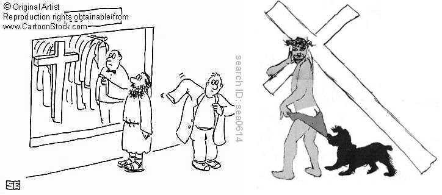
Está Jesús en la cruz gritando:
—Malditos hijos de puta, romanos, cabrones….
y en esto se acerca Pedro corriendo y le dice:
—Maestro, maestro, que viene la prensa.
—”Señor, perdónales porque no saben lo que hacen”
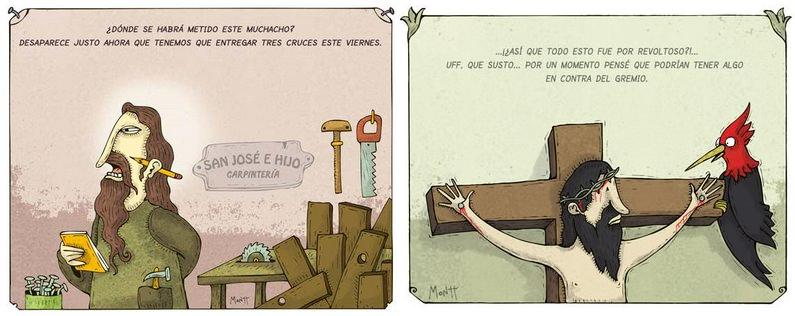Luego de esto Jesús empieza a llamar a Pedro a gritos: -“Pedro, Pedro!!!” y Pedro se acerca corriendo mientras los romanos comienzan a tirarle flechas, sigue corriendo herido mientras Jesucristo sigue llamándole, finalmente llega arrastrandose moribundo y dice:
Estaba Jesús en la cruz, levanta su cabeza y dice:
Despues mira a Juan y le dice
Estaba Jesucristo clavado en cruz, mira a la izquierda y le dicen al ladron de ese lado:
Después de todas estas cosas vino la profetizada resurrección.
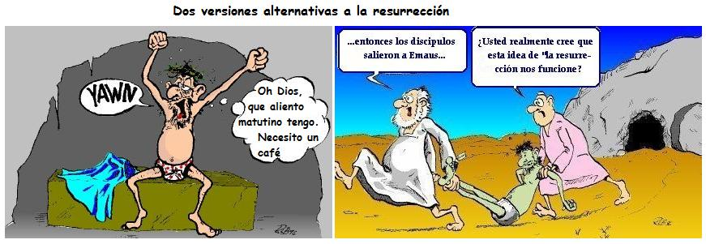Sin embargo, la experiencia final de Jesús en la Tierra le dejo traumas permanentes.

Y estas son las palabras que el espíritu de humor inspiró al santo Risástomo, como hizo antes con Moiseis y Moisiete. Amén
Nota: Para comentar las caricaturas de Alberto Montt lo invitamos a ir a Dosis diarias.
Volver a la sección Humor
Comentarios
Comments powered by Disqus